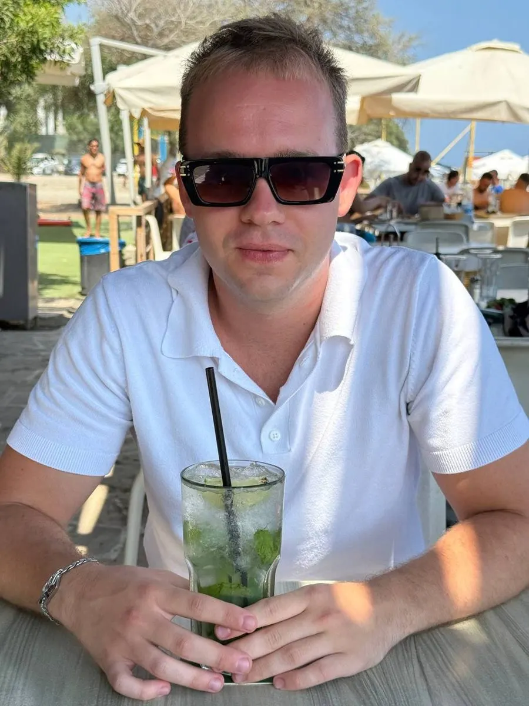

ЗахарZakharСоколинскийSokolinsky
Рутину - машинам. Клиентов - вам.
Routine to machines. Clients to you.
Маркетолог-автоматизатор. Реклама и сайт приводят клиентов, а записи, напоминания и отчёты делают боты.
Marketer who automates. Ads and a site bring the clients, bots handle bookings, reminders and reports.
Что вы получаетеWhat you get
Уже работаетAlready running
Все работыAll workГде у вас теряются заявки?Where do your leads get lost?
Опишите в двух словах. Отвечу сам и скажу, что автоматизировать первым.
Tell me in a few words. I'll reply myself and say what to automate first.
РаботыWork
Не скриншоты, а работающие вещи: демо, видео или живой сайт.
Not screenshots but working things: a demo, a video or the live site.
УслугиServices
Главное - автоматизация, реклама и ИИ-контент. Остальное подключаю, когда это нужно проекту.
The core is automation, ads and AI content. The rest comes in when the project needs it.
Как я работаюHow I work
- Бесплатный разборFree review
Созвон или переписка: смотрю, где у вас теряются заявки и время.A call or a chat: I look at where you lose leads and time.
- АнализAnalysis
Аудит процессов, рекламы, сайта, CRM и конкурентов.An audit of processes, ads, site, CRM and competitors.
- План и сметаPlan and estimate
Этапы, сроки и цена каждого этапа до старта.Stages, deadlines and the price of each stage before we start.
- СборкаBuild
Делаю по этапам, показываю промежуточный результат и отчитываюсь.I build stage by stage, show interim results and report.
- ТестTesting
Проверяю на реальных заявках, а не на примерах.Tested on real leads, not on samples.
- ЗапускLaunch
Включаю, обучаю команду, оставляю инструкцию.I switch it on, train the team and leave a guide.
- ПоддержкаSupport
Чиню, если что-то сломалось, и дорабатываю под новые задачи.I fix what breaks and extend it for new tasks.
ГарантииGuarantees
В зависимости от объёма правки.Depending on the size of the change.
Аккаунты, кабинеты и CRM оформлены на клиента.Accounts, ad cabinets and CRM belong to the client.
Платите за готовый этап, а не за всё сразу.You pay for a finished stage, not everything upfront.
Частые вопросыFAQ
Как оплатить?How do I pay?
Криптовалютой или наличными. Оплата по этапам.Crypto or cash. Payment by stage.
Что если что-то сломается?What if something breaks?
Пишете в Telegram, я разбираюсь и чиню. Правки бесплатно, в зависимости от объёма.Message me in Telegram, I find the cause and fix it. Revisions are free, depending on the size.
Сколько моего времени нужно?How much of my time does it take?
Созвон на старте, доступы и ответы на вопросы по ходу. Остальное делаю сам и показываю результат.A call at the start, access and answers along the way. I do the rest and show the results.
Чьи будут доступы?Who owns the access?
Ваши. Аккаунты, рекламные кабинеты и CRM оформлены на вас и остаются у вас.You do. Accounts, ad cabinets and CRM are in your name and stay with you.
Работаете с Bitrix24, Altegio, amoCRM?Do you work with Bitrix24, Altegio, amoCRM?
С Bitrix24 и Altegio уже работают мои связки (EQT и Clariva). amoCRM подключается так же: через API, n8n или Albato.My integrations already run on Bitrix24 and Altegio (EQT and Clariva). amoCRM connects the same way: API, n8n or Albato.
Какие сроки?How long does it take?
Зависит от задачи. Сроки каждого этапа фиксирую в плане до начала работы.It depends on the task. I fix the deadline for every stage in the plan before we start.
А если нужны правки?What about revisions?
Правки бесплатно, в зависимости от объёма правки. Промежуточный результат показываю по ходу, чтобы их было меньше.Revisions are free, depending on the size. I show interim results along the way so there are fewer of them.
Обо мнеAbout

Убираю ручную работу из бизнеса: заявки, напоминания, объявления и отчёты идут сами.
I take manual work out of a business: leads, reminders, listings and reports run by themselves.
Работал в агентстве SYNC AGENCY, сейчас помогаю бизнесу напрямую: спа на Кипре, недвижимость в Дубае, тату-студия в Минске.
I worked at SYNC AGENCY and now help businesses directly: a spa in Cyprus, real estate in Dubai, a tattoo studio in Minsk.
- ОбразованиеEducation
- БГЭУ, 2026, маркетолог-экономист. Диплом: применение ИИ для повышения эффективности бизнеса.Belarus State Economic University (BSEU), 2026, Marketing & Economics. Thesis: AI for business efficiency.
- ЯзыкиLanguages
- Русский родной, английский базовый.Russian native, English basic.
- СпортSport
- КМС по плаванию, 9 лет профессионального спорта; около года вольной борьбы и бокса. Отсюда привычка доводить до конца.Candidate Master of Sports in swimming, 9 years of professional training; about a year of freestyle wrestling and boxing. That's where finishing what I start comes from.
- ИнструментыTools
КонтактыContact
Опишите задачу своими словами. Бесплатный разбор: ответ с планом за 2 часа.
Describe the task in your own words. Free review: a plan back within 2 hours.
Отвечаю каждый день с 7:00 до 00:00, быстрее всего в TelegramI reply every day from 7:00 to 00:00, fastest in Telegram
Эту страницу ещё не автоматизировалиThis page hasn't been automated yet
Такой страницы нет. Можно разбить цифры мячом или вернуться на главную.
There's no such page. Break the digits with the ball or go back home.
На главнуюBack to home